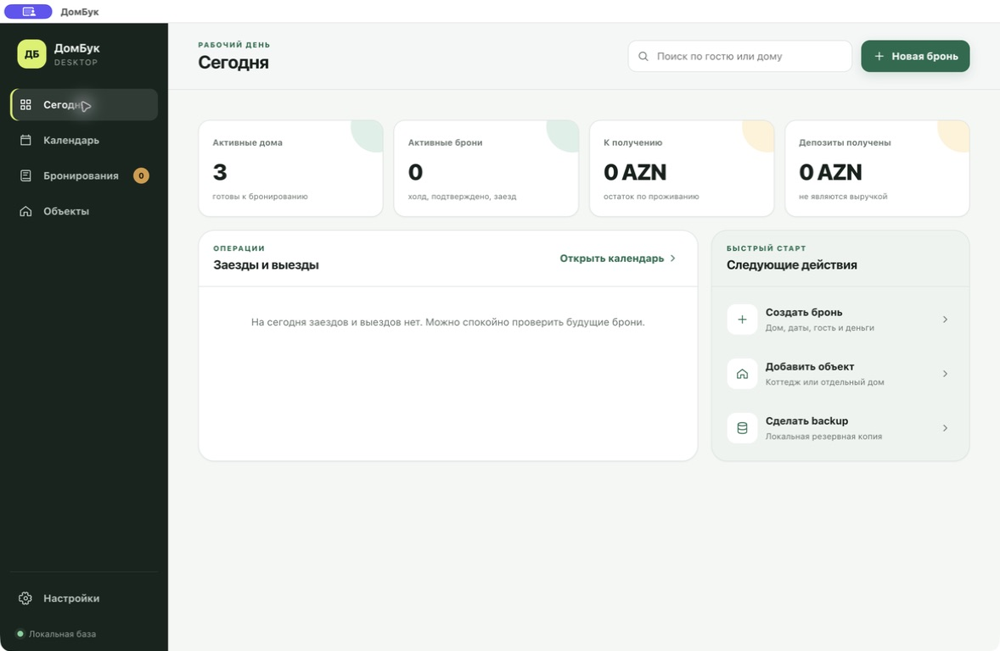
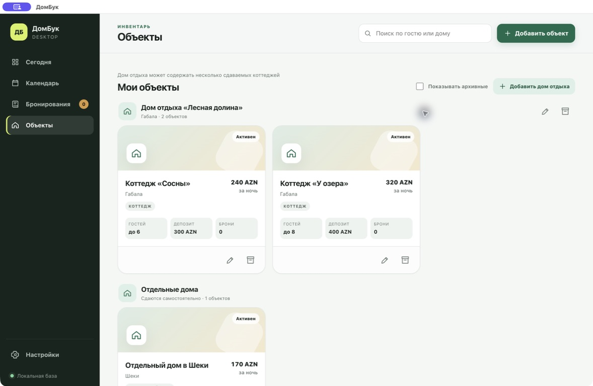

1
Узнаваемые слова
«Дом отдыха», «Коттедж», «Гость», «Получено», «Осталось». Без PMS, inventory, ledger и других профессиональных терминов.
Один рабочий день, один календарь и понятная иерархия: дом отдыха содержит коттеджи, а отдельный дом сдаётся самостоятельно. Интерфейс рассчитан на владельца, а не на специалиста по гостиничным программам.
Он может пользоваться компьютером только для повседневных задач, работать один, отвлекаться на звонки и записывать часть броней с телефона. Ошибка в дате или депозите стоит реальных денег, поэтому скорость не должна достигаться ценой ясности.
«Дом отдыха», «Коттедж», «Гость», «Получено», «Осталось». Без PMS, inventory, ledger и других профессиональных терминов.
На каждом экране одна зелёная кнопка: создать бронь, добавить объект или сделать backup.
Архивация вместо удаления, понятное подтверждение, история денег и сохранение формы при конфликте дат.
Владелец сначала узнаёт место, затем конкретный сдаваемый объект. В бронировании выбирается коттедж или дом — не сам комплекс.
Название, адрес, общие заметки и список коттеджей. Архив комплекса не стирает коттеджи и историю.
Своё название, вместимость, цену за ночь, депозит, время заезда/выезда и независимый календарь.
Ниже показаны фактически запущенные экраны MVP. Дальнейшие модули должны продолжать эту иерархию, плотность и цветовой язык.


Кнопки и поля не ниже 44 px. Иконка никогда не остаётся единственным способом понять действие.
14–16 px в зависимости от плотности. Числа и важные статусы крупнее и контрастнее.
Создание брони идёт короткими смысловыми блоками, сложное раскрывается постепенно.
Escape, крестик и «Отмена» закрывают форму без обязательного заполнения.
Фокус видим с клавиатуры, цвет дублируется словом, ошибки объявляются рядом с полем.
Критические изменения выполняются обычной кнопкой; точность мыши не требуется.
| Экран | Главный вопрос хозяина | Главное действие | Состояние |
|---|---|---|---|
| Сегодня | Что мне нужно сделать сейчас? | Новая бронь | Готов MVP |
| Календарь | Какой коттедж свободен? | Новая бронь на выбранные даты | Готов MVP |
| Бронирования | Кто приезжает и сколько должен? | Создать / изменить бронь | Готов MVP |
| Объекты | Какие дома и коттеджи я сдаю? | Добавить объект или дом отдыха | Готов MVP |
| Финансы | Что оплачено, что вернуть? | Зафиксировать платёж/депозит | Следующий этап |
| Настройки | Мои данные в безопасности? | Создать backup | Готов MVP |
Системное меню, traffic lights, Cmd+N и нативное расположение окна.
Обычные кнопки окна, Ctrl+N, установщик NSIS и portable-версия.
AppImage и deb; интерфейс не зависит от системных шрифтов или нативных SQLite-модулей.
Electron + SQLite WASM. Один код интерфейса и базы работает на трёх платформах; инсталляторы собираются на соответствующих CI runners.